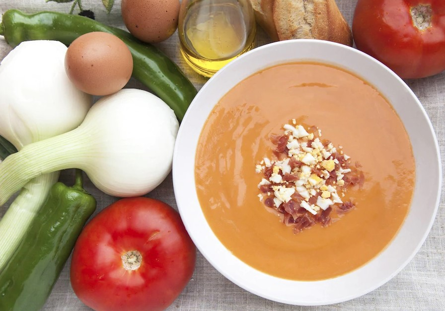

Non è un segreto che il rispetto dei principi di un'alimentazione adeguata è la chiave di una buona salute, benessere, bellezza e impeccabile, naturalmente, una figura perfetta, ma dopo, è molto difficile avere una dieta equilibrata, quando in ogni angolo c'è la tentazione di vari cuscini, panettieri e etichette, pacchetti chiari e attraenti che non possono essere utilizzati nei prodotti.
L'Andalusia e il suo segreto per il gazpacho caldo
Nei mesi estivi, nel sud della Spagna, non c'e ' modo migliore di uscire dal caldo della gelida zuppa di pomodoro gazpacho. Oltre ai pomodori, sono aggiunti cetrioli, cipolle, olio d'oliva e aglio e di solito sono serviti con Toast e peperoni rossi. Secondo una delle leggende culinarie, la zuppa è stata inventata dai mulisti spagnoli, che avevano sempre a disposizione i vecchi prodotti. Oggi questo piatto spagnolo tradizionale è una delle più famose zuppa di pomodoro del mondo.
La paella e ' un magnifico piatto di Valencia.
Oggi in Spagna vi sono molte variazioni della famosa paella, ma in ogni caso il riso sarà l'ingrediente obbligatorio. Tradizionalmente, gli abitanti delle zone rurali in Spagna hanno trasformato la paella nei prodotti a loro disposizione aggiungendo alle varietà di polli, conigli e ortaggi tipici di Valencia, come i fagioli di lime o di zucchero. Ma nel corso dei secoli la ricetta della paella è cambiata e oggi in Spagna il riso è più popolare con i molluschi, ad esempio gamberi e seppie. La paella classica può essere testata sulle spiagge di Valencia.
Briciole di pane di Teruel, semplici e di buon gusto
Non puoi andare a trovare Teruel o provare le briciole di pane di Teruel. La preparazione è molto semplice: il pane viene tagliato, immerso in acqua con sale per un giorno, poi fritto con olio e aglio e tessuto in continuazione. Il risultato e ' un prodotto molto insolito, gustoso e ricco di briciole di pane, tipo Couscous. Ai fini di una maggiore saturazione del gusto, alle briciole di pane possono essere aggiunti pezzi di maiale, salsicce o anche uva.

Melanzane catalane con antipasto
Per cucinare melanzane catalane con peperoni rossi, le verdure sono tenute al fuoco aperto o grigliate finché la buccia non diventa nera. Coprire con un piatto e raffreddare, poi sbucciare melanzane e peperoni e tagliarli in strisce. Consiglio: non cerchi di raffreddare le verdure con acqua fredda, perché perdono il succo, il che conferisce al piatto un sapore e un odore caratteristici. Nella maggior parte dei casi, le verdure sono impregnate di succo di pomodoro e olio, di acciughe e cipolle e talvolta di tonno.